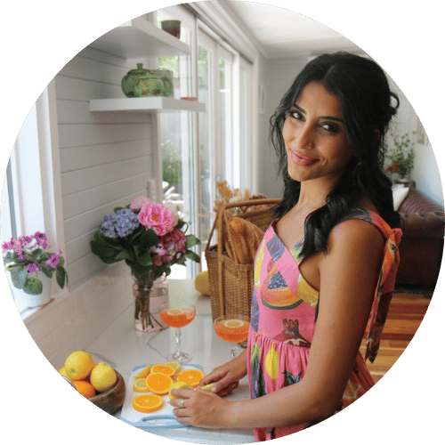

About Me
 A little reminder to all those I teach...

Here's a little bit about me :)
I’m a friendly, kind, and caring person who values helping others and making meaningful connections. I’m currently studying to become a secondary teacher, majoring in Woodwork and Food Technology—two areas I’m passionate about both creatively and practically. Alongside my studies, I work as a Learning Support Officer in a school setting, where I support students of all abilities, and I also tutor high school students across various subjects. My experience in these roles has deepened my understanding of education, strengthened my communication skills, and confirmed my passion for working with young people. I also work part-time in retail, which has taught me how to balance responsibilities, multitask effectively, and engage with a wide range of people.I’m someone who thrives on new experiences and enjoys pushing myself outside of my comfort zone. Whether it’s trying a new food, taking on a new project, or meeting someone for the first time, I always approach challenges with optimism and a sense of humour. I value laughter, teamwork, and empathy in all areas of my life and love creating positive, supportive environments wherever I go. Being helpful and approachable comes naturally to me, and I genuinely enjoy uplifting others and making people feel seen and supported.